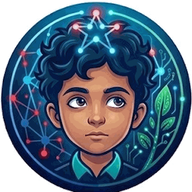

تعلَّم · العب · انمُ — Learn · Play · Grow
التحميل يأخذ وقتاً أطول من المعتاد. تحقق من الإنترنت ثم أعد المحاولة.
Loading is taking longer than usual. Check your connection and try again.
هذا التطبيق يحتاج JavaScript.
أكاديمية عزيز تطبيق تعليمي مجاني للأطفال (٦–١٢ سنة) — أكثر من ١٣٠ نشاطًا بالعربية والإنجليزية، بلا إعلانات وبلا تتبُّع. يرجى تفعيل JavaScript في متصفحك.
This app needs JavaScript.
Aziz Academy is a free educational app for kids 6–12 — 130+ activities in Arabic and English, with zero ads and zero tracking. Please enable JavaScript to continue.